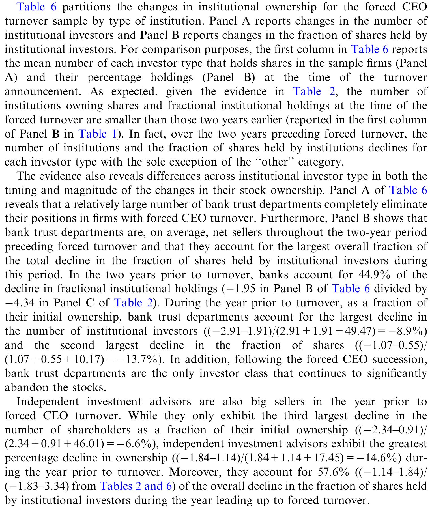
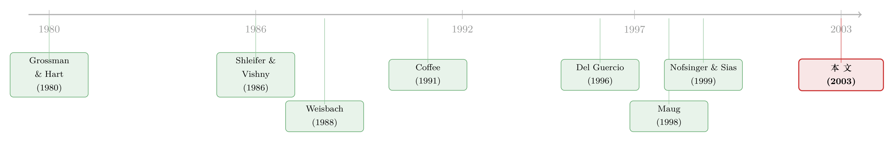

用脚投票：被炒掉的 CEO 背后，是谁先悄悄离场
本文读的是 Parrino, Sias & Starks (2003, Journal of Financial Economics)：在 CEO 被董事会强行赶下台之前的那一年，机构投资者已经在用脚投票——平均减持 12%，其中最「审慎」、最「灵通」的那批机构跑得最快；而这场静悄悄的减持，反过来又显著抬高了 CEO 被解雇、以及由外部人接任的概率。
1 引言：开除一个 CEO 之前，发生了什么？
公司治理的讨论里，有一个被反复书写的主角，叫「机构股东积极主义（shareholder activism）」——基金经理们在股东大会上递交提案、在媒体上点名批评、给董事会打电话施压。学术界与大众媒体都盯着这条线看。
但这其实只是机构表达不满的两种方式之一。另一种，要古老得多、也常见得多，却几乎没人认真研究过：不吭声，直接卖掉。
华尔街给它起了个名字，叫「华尔街规则（Wall Street Rule）」，又叫「华尔街散步（Wall Street Walk）」。Lowenstein (1988) 有一句很传神的描述：机构投资者「用买入或卖出来含蓄地褒奖或批评管理层，但几乎从不更直接地介入，连打个电话都懒得打」。
问题在于：这究竟是一句华尔街的口头禅，还是一件真实发生、可以被数据量出来的事？机构真的会在对管理层不满时集体出逃吗？如果会，是哪些机构在跑、为什么跑？更进一步——它们的出逃，董事会看在眼里吗？会不会反过来改变董事会的决定？
这三个问题，就是 Parrino、Sias 和 Starks 这篇论文要回答的全部。而他们找到的那个巧妙的「锚点」，是一个事后才能确认、事前却充满悬念的公司事件：强制性 CEO 更替（forced CEO turnover）。
2 识别策略：用一个「事后确定有问题」的事件，去看「事前」的行为
这篇论文最聪明的地方，不在于用了什么花哨的计量方法，而在于事件的选择本身。
想研究「机构是否会在管理层糟糕时卖出」，最大的难题是：你怎么知道哪家公司的管理层「糟糕」？这是一个事前看不清、容易掺杂主观判断的东西。作者的办法是反过来——找一批事后被董事会盖章认定「管理层有问题」的公司，也就是 CEO 被强行赶下台的公司，然后回头去看事件发生之前的那两年，机构到底在做什么。
这是一种典型的「事后定锚、事前观察」的设计：强制更替这个动作，等于董事会替研究者完成了「这家公司确实出了问题」的认定。研究者只需站在这个确定的终点往回看。
接着，一个自然的问题是：怎么把「被炒」和「正常退休」分开？作者沿用 Parrino (1997) 的分类规则：先看《华尔街日报》是否明说 CEO 是「被解雇」「被迫离职」或「因政策分歧离开」；剩下的情形，若离任 CEO 年龄在 60 岁以下、且公告没有提到去世、健康或另谋他就（或虽称退休却未提前至少六个月公告），就归为强制更替，并进一步翻查商业媒体逐一核实。最终从 583 起更替里，筛出 111 起强制更替、472 起自愿更替。
然后是关键的对照设计。光有「被炒」的公司还不够——这些公司业绩本来就差，机构减持也许只是因为「股票跌了所以卖」，而非「因为管理层有问题所以卖」。为了把这两件事分开，作者构造了一个匹配控制组（matched control sample）：对每一家强制更替公司，在同一时间、市值落在其 70%–130% 区间、且过去一年股票回报最接近、过去三年又没发生过 CEO 更替的 NYSE 公司里，挑一家最像的。最终配出 109 家匹配公司。
这一步是整篇论文识别的灵魂所在：
- 强制更替组 vs. 匹配控制组——两组公司业绩同样差，差别只在于「这个差业绩有没有被归咎到 CEO 头上」。强制组的 CEO 被认定要为差业绩负责并被解雇；控制组的 CEO 没有。如果两组的机构减持行为不同，说明驱动减持的不只是「业绩差」这个共同因素，而是与「管理层问题」相关的某种东西。
- 强制更替组 vs. 自愿更替组——自愿离任的 CEO，公司未必出了治理问题，是又一道对照。
数据上，机构持股来自 CDA/Spectrum 的 13F 数据库（所有持有 $1 亿美元以上股票的机构都须向 SEC 申报持仓），季度频率，覆盖事件前后各八个季度。两个持股度量：持有该股的机构数量，以及机构持有的股份比例。业绩用 CRSP 的季度市场调整收益（以等权 NYSE 指数调整），会计业绩用 Compustat 的行业调整 EBIT/assets。
3 第一个发现：机构真的在跑，但远非「集体出逃」
先看总量。结论很干脆：在强制更替的前两年，机构持股持续下滑，越接近解雇时点跌得越狠，最猛的减持发生在 CEO 被炒前的那四个季度。平均而言，机构在 CEO 更替前一年里减持了 12%。
但这篇论文真正有意思的地方，是它没有停在这个总量数字上，而是立刻追问：是所有机构都在卖吗？
答案是否定的，而且否得很彻底。在更替前两年里持有过这些公司的 19,104 家机构中，10,401 家（54.44%）减持，8,624 家（45.14%）反而增持。也就是说，机构整体在净卖出，但近一半的机构却在买。
这个「一半卖、一半买」的结构，把问题从「机构卖不卖」彻底转向了一个更深的问题：
真正要解释的，不是「为什么这些股票变得不值得持有」，而是「为什么这些股票对某一类投资者变得相对更不值得持有、却被另一类投资者接走了」。机构出逃的另一面，必然是个人投资者和另一类机构的接盘。
于是全文的核心，就落在了「谁在卖、谁在买」这一道横截面的分层上。作者提出四个互相竞争的解释，并把 13F 里的机构按类型拆开来逐一检验。
4 谁在卖：四个假设，一场分层的「体检」
作者把待检验的解释写成四条假设：
- H1（动量交易）：更替前的几年里股票通常负超额收益，而部分机构是动量交易者（追涨杀跌），所以它们卖。
- H2（审慎/谨慎人原则）：部分机构偏好「审慎证券（prudent securities）」，而这些公司的股票在更替前变得越来越不审慎（如削减股利、波动率上升），所以这类机构离场。
- H3（信息优势）：部分机构比别人更灵通，提前预见到负的超额收益而抢先卖出。
- H4（治理成本）：部分机构卖出，是因为它们认定公司的治理结构让「直接干预」的成本太高，干预不如一走了之。
接下来是这篇论文最漂亮的一段实证叙事——它没有泛泛地说「机构在卖」，而是把每一条假设都对应到一类可观测的机构特征上。
H1，动量。 作者找到一些支持：这些股票近期表现差，部分机构确实因此撤离。但关键的反转在于——用控制组校准后，强制更替组的「异常」减持比原始减持更大。也就是说，把「股票跌了所以卖」这部分剔除掉之后，剩下那部分无法用收益解释的减持反而更突出。动量解释不了全部。（关于动量到底是谁在做、与机构交易的关系，可参见《动量到底是谁干的？——把成交单拆成大小两摞来看》。）
H2，审慎。 这是支持最强的一条。削减或取消股利的公司，机构出逃幅度明显更大；而强制更替公司削减股利的频率，高于控制组和自愿更替组。同时，强制更替公司在更替前四个季度的股价波动率也更高——股票变得「不审慎」了。最有说服力的证据是：银行信托部门（bank trust departments）——最受「谨慎人原则」约束、最在意持有审慎证券的一类机构——贡献了最大的减持。
H3，信息。 作者的推断很巧：持仓越大的机构，越有动力花资源去搞清楚公司前景，因而越可能是「灵通」的。如果是信息驱动的卖出，那就应该看到大仓位机构比小仓位机构跑得更凶——数据正好呈现这个模式。而且，看上去最灵通的一类机构（独立投资顾问，independent investment advisors）贡献了更替前一年里很大一部分抛售。更狠的一个佐证：机构买入的股票，在随后四年里跑赢它们卖出的股票——机构确实比别人灵通。（财报公布前机构就已站好队的类似证据，可参见《财报还没发，机构已经站好了队》。）
H4，治理成本。 支持最弱。只有边际显著的证据表明：当 CEO 是创始家族成员时，机构更倾向于离场。但持股变动与董事会构成、CEO 持股比例等其他治理变量都没有显著关系。
下面这张表把不同类型机构的持股变动分了层，是上面这套「分层体检」的核心证据——银行信托部门和独立投资顾问的减持尤为突出。

Table 6: partitions the changes in institutional ownership for the forced CEO
把四条线索拼起来，一幅清晰的图景浮现出来：最在意审慎、最灵通、以及做动量的那批机构，把股票卖给了那些不那么在意审慎、不那么灵通、也不做动量的个人投资者和机构。 在 CEO 被赶下台之前，这些公司的股东结构已经发生了一次实质性的换血。
5 真正关键的一步：这场换血，董事会看在眼里吗？
如果故事到这里就结束，它也只是一篇「机构会用脚投票」的精彩描述。但论文最有野心的一问出现在最后：股东结构的这次漂移，会不会反过来影响董事会的决策？
这是从「描述」走向「治理含义」的一跃。作者做了两件事。
第一，把「更替前一年的机构持股变动」放进一个区分三类公司（强制更替 / 自愿更替 / 匹配控制）的模型里。结果是：即便控制了收益差异和此前文献已知能预测更替的各种变量，机构持股变动仍是一个显著的区分因子——一家公司股票被机构卖得越多，其 CEO 被强行解雇的概率越高。
第二，看「换谁来当 CEO」。结果同样显著：机构持股下降，与「由外部人（outsider）接任被解雇 CEO」的概率显著正相关。 这一点的含义不小——已有文献表明，由外部人接任的强制更替，伴随更大的公告期超额收益（Borokhovich et al., 1996）和更好的更替后经营业绩（Huson et al., 2001）。（关于「炒掉 CEO 之后公司是真变好了还是只是运气回归」，可参见《炒掉一个 CEO 之后，公司真的变好了吗》——那篇正是同一位 Parrino 参与的工作。）
作者在这里非常克制，明确指出：相关不等于因果。股东结构漂移与董事会决策的同步，至少有三种可能的解读：(1) 股东结构变化真的影响了董事会；(2) 减持的机构同时也在私下与董事会沟通（比如打个电话解释为什么要卖），是这种「非正式沟通」在起作用；(3) 股东结构漂移和解雇决定，都被某个第三方因素（比如媒体报道）同时驱动。论文能确立的是稳健的相关，而非干净的因果箭头。
也正因如此，这篇论文的标题「用脚投票」才显得意味深长：机构未必需要在股东大会上举手，光是默默卖出，似乎就在董事会的决策里留下了印记。
6 文献脉络：从「积极主义」到「沉默的多数」
把这篇论文放回它所在的研究谱系里，会看得更清楚。
最早的源头，是关于大股东监督激励的理论：Grossman & Hart (1980) 的搭便车问题，以及 Shleifer & Vishny (1986) 指出大股东因持股集中而更有动力监督管理层。这条线随后分叉出两支。
一支走向「积极主义」：Weisbach (1988) 揭示外部董事与 CEO 更替的关系，开启了治理机制的实证研究；之后大量文献研究公共养老金、工会基金等如何通过提案与谈判影响公司，但 Smith (1996)、Karpoff et al. (1996) 等的证据普遍显示，积极主义对长期业绩的影响其实有限。
另一支，则是这篇论文真正接续的那一支——「卖出」与「流动性 vs. 控制」的权衡。Coffee (1991) 和 Bhide (1994) 主张，机构普遍把流动性看得比监督更重，集中持股的代价（牺牲流动性）太大，所以积极主义是例外而非常态；Bhide 甚至认为美国市场的高流动性反而妨碍了有效治理——因为「卖」太容易了。Maug (1998) 则反驳说，流动性与控制的关系在理论上是模糊的：流动市场固然让大股东更容易脱手，但也让有意监督者更容易建仓获利，孰强孰弱是个实证问题。

与此同时，两条独立的实证文献为这篇论文提供了「分层」的弹药：一是 Del Guercio (1996)、Falkenstein (1996) 关于机构（尤其银行信托）受「谨慎人原则」约束、偏好审慎证券的研究；二是 Nofsinger & Sias (1999)、Wermers (1999, 2000) 等关于机构比个人投资者更灵通的证据。
Parrino、Sias & Starks (2003) 恰好坐在这几条线的交汇处：它是第一篇系统检验「机构在差公司里卖出股票」的实证研究，把「卖不卖」的总量问题，推进成「谁卖、为什么卖、卖出有没有后果」的结构问题，并第一次把股东结构漂移与董事会决策连了起来。
评论与延伸（Q&A + 研究方向）
(a) 几个可能的疑问
Q：机构减持，难道不就是因为股票跌了、它们在追跌杀跌吗？这跟「管理层有问题」有什么关系？
这正是匹配控制组要回答的。控制组公司业绩同样差、同样跌，但 CEO 没被认定有责任。强制更替组在剔除收益因素后的「异常减持」反而比原始减持更大，且明显超过控制组——说明驱动减持的不只是「跌」，而是与管理层问题相关的某种东西（如股利削减、波动率上升）。
Q：13F 数据只覆盖 $1 亿美元以上的机构，会不会漏掉小机构、把图景带偏？
会有覆盖偏差，但方向上对本文结论不致命。论文聚焦大公司，恰恰因为大机构在大公司里持仓更重、决策更有意义；遗漏的是小机构，而本文的核心机制（大仓位机构跑得更凶）反而在大机构内部更可识别。代价是对「小机构是否也在卖」无法说话。
Q：「机构卖出 → CEO 被解雇」的因果方向能确定吗？会不会是董事会先决定要动手，机构嗅到风声才跑？
不能确定，作者自己也坦承。论文确立的是稳健相关，并列出三种解读（影响董事会、伴随私下沟通、共同的第三方驱动）。它无法排除「机构提前嗅到解雇信号而卖」的反向逻辑——这是本文识别上最大的软肋。
Q：为什么偏偏是银行信托部门跑得最猛？
因为银行信托受「谨慎人原则」约束最严，最在意持有「审慎证券」。当公司削减股利、波动率上升，股票在法律和声誉意义上变得「不审慎」，银行信托被迫或主动减持。这恰是 H2 最直接的证据，也与 Del Guercio (1996) 的发现一致。
Q：这篇论文是不是在说「积极主义没用，卖出才是王道」？
不是。它说的是「卖出」是一种被长期忽视、却真实存在且可能影响治理的表达方式，与积极主义并行。论文甚至暗示，卖出之外可能还伴随私下沟通——即「用脚投票」和「用嘴说话」未必互斥。
Q：个人投资者接走了这些「烫手」的股票，他们是冤大头吗？
从随后四年「机构买入的跑赢卖出的」来看，接盘的一方平均确实吃了亏。但这是平均意义上的，论文没有刻画个人投资者的异质性，也没断言每一笔接盘都是错的。
(b) 几个可能的研究问题与提案
1. 把「用脚投票」搬到公司债市场。
【经济故事】股票投资者卖出会压低股价、影响董事人力资本；但债权人对「管理层变差」的反应渠道完全不同——他们关心违约风险而非控制权。债券型机构在 CEO 被炒前会不会也提前减持、推高利差？股与债的「用脚投票」是否同步？ 【可行性】中。需要 TRACE（2002 年后）成交数据 + 债券型基金持仓（如 eMAXX / Lipper），与 13F 股票持仓对齐。识别可沿用本文的强制更替事件 + 匹配控制设计。难点是债券持仓频率低、二级市场流动性差，信号噪声大。
2. 外资机构是更早离场，还是更晚？
【经济故事】外资常被贴上「信息劣势」或「短期投机」的标签。如果「灵通者先跑」成立，那外资在强制更替前的减持时点与幅度，恰好是检验外资到底有没有信息劣势的干净场景。 【可行性】中。13F 可识别机构国别（或用 FactSet 持仓）。可借鉴本文的分层思路，把机构按国别再切一刀。识别策略现成，难点是外资在美股大公司中的占比与样本量。（与外资行为相关的讨论，可参见《外资真是「蝗虫」吗？》。）
3. 机构出逃对股票流动性的冲击。
【经济故事】近一半机构集中减持，必然改变股东结构的分散度与做市环境。CEO 被炒前的这段「换血期」，股票流动性（价差、深度、Amihud 非流动性）会不会系统性恶化？这把「治理事件」与「流动性」直接连起来。 【可行性】高。日频 TAQ/CRSP 可算流动性度量，事件窗口清晰，本文的事件样本可直接复用。这是一个相对 doable 的扩展。
4. 用更现代的样本重做：被动指数化是否削弱了「用脚投票」？
【经济故事】2000 年后被动投资爆发，指数基金「卖不掉」（必须跟踪指数），这恰是 Coffee–Bhide–Maug 之争的现实版。被动持股占比高的公司，机构在强制更替前的减持是否更弱、董事会的解雇决策是否更迟钝？ 【可行性】中。需区分主动/被动持仓（13F + 基金层数据），样本延伸到 2000s–2010s。识别可沿用强制更替事件，难点是被动持股的内生性（哪些公司更可能被高度指数化）。
参考文献
- Borokhovich, K.A., Parrino, R., Trapani, T. (1996). Outside directors and CEO selection. Journal of Financial and Quantitative Analysis 31, 337–355.
- Bhide, A. (1994). Efficient markets, deficient governance. Harvard Business Review 72, 128–140.
- Coffee, J.C. (1991). Liquidity versus control: the institutional investor as corporate monitor. Columbia Law Review 91, 1277–1368.
- Del Guercio, D. (1996). The distorting effects of the prudent-man laws on institutional equity investments. Journal of Financial Economics 40, 31–62.
- Falkenstein, E. (1996). Preferences for stock characteristics as revealed by mutual fund portfolio holdings. Journal of Finance 51, 111–135.
- Grossman, S.J., Hart, O.D. (1980). Takeover bids, the free-rider problem, and the theory of the corporation. Bell Journal of Economics 11, 42–64.
- Karpoff, J.M., Malatesta, P.H., Walkling, R.A. (1996). Corporate governance and shareholder initiatives: empirical evidence. Journal of Financial Economics 42, 365–395.
- Lowenstein, L. (1988). What's Wrong with Wall Street? Addison-Wesley, Reading, MA.
- Maug, E. (1998). Large shareholders as monitors: is there a trade-off between liquidity and control? Journal of Finance 53, 65–98.
- Nofsinger, J.R., Sias, R.W. (1999). Herding and feedback trading by institutional and individual investors. Journal of Finance 54, 2263–2295.
- Parrino, R. (1997). CEO turnover and outside succession: a cross-sectional analysis. Journal of Financial Economics 46, 165–197.
- Shleifer, A., Vishny, R.W. (1986). Large shareholders and corporate control. Journal of Political Economy 94, 461–478.
- Smith, M.P. (1996). Shareholder activism by institutional investors: evidence from CalPERS. Journal of Finance 51, 227–252.
- Weisbach, M.S. (1988). Outside directors and CEO turnover. Journal of Financial Economics 20, 431–460.
- Wermers, R. (1999). Mutual fund herding and the impact on stock prices. Journal of Finance 54, 581–622.